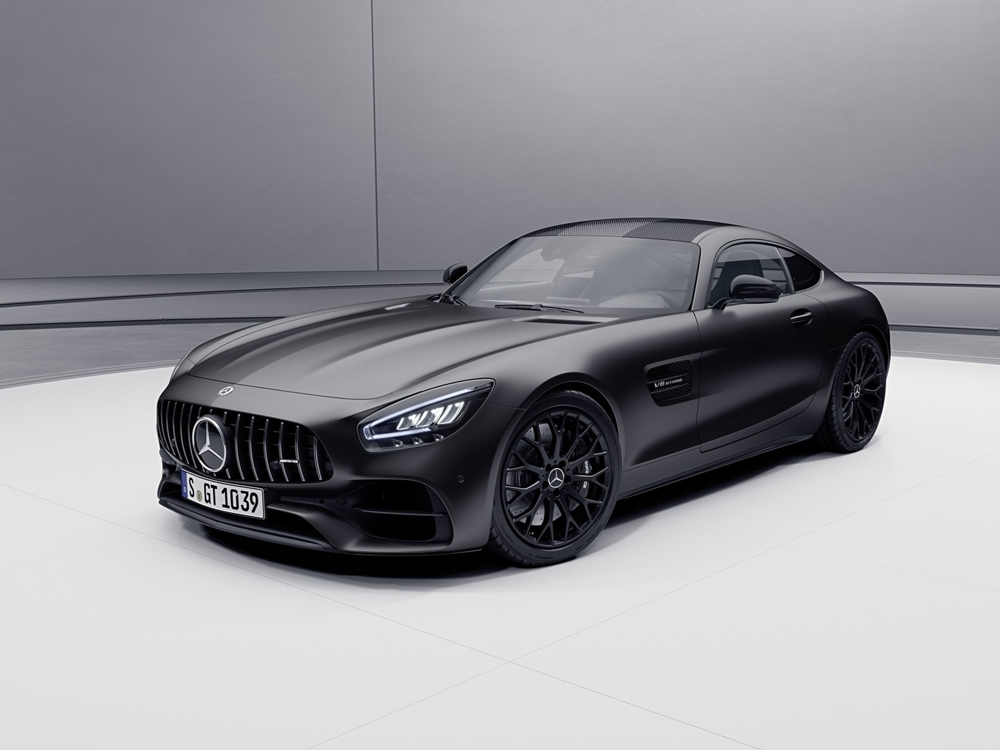
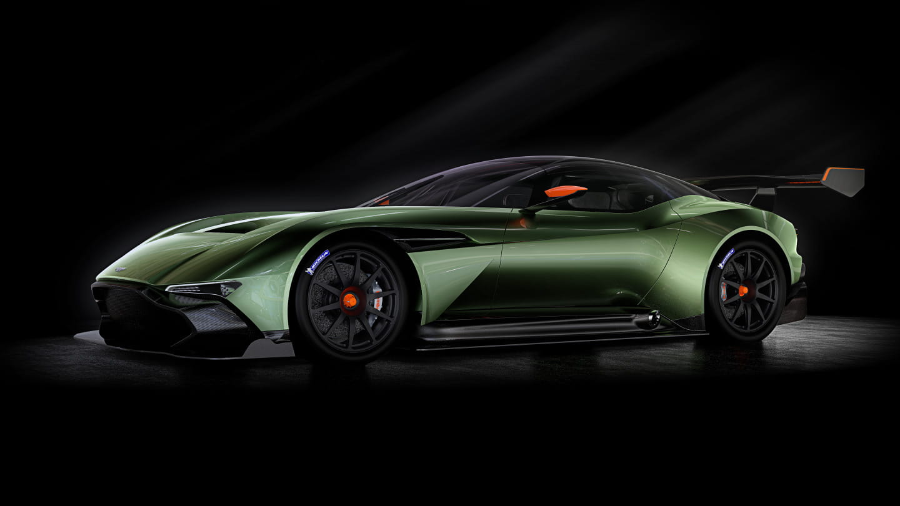
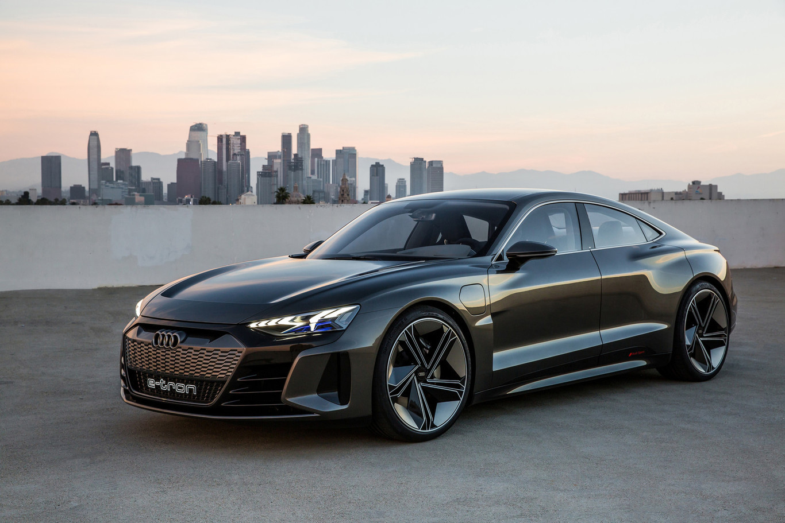

Bajo el capó de este impresionante Vantage se encuentra el clásico motor biturbo 4.0 V8, procedente de AMG,
aunque en este caso produce 535 CV, que son 25 CV más que en este caso con el Vantage normal.
El par máximo se mantiene en 685 Nm, aunque según Aston Martin, está disponible por más tiempo. Además, la
transmisión automática de ocho velocidades ha sido revisada para cambios de marcha más rápidos y una sensación
más directa.
En cuanto a los cambios puramente mecánicos, también cabe destacar la mejora del chasis, que gracias a los
muelles y amortiguadores de corte deportivo mejora el comportamiento y la controlabilidad de la carrocería,
aunque no se detallan los distintos cambios.
Una característica notable de esta edición especial es el juego de llantas de aleación de 21 pulgadas (en lugar
de las estándar de 20 pulgadas), ya que es la primera vez que Aston Martin monta llantas Vantage de este tamaño.
En este caso, los neumáticos fueron diseñados específicamente para Pirelli.
Sin duda, la aerodinámica de esta versión F1 también llama la atención, incluidos los componentes de fibra de
carbono, como el splitter delantero, el difusor activo o el gran alerón trasero. Según Aston Martin, el Vantage
ofrece 200 kg adicionales de carga aerodinámica cuando se conduce a toda velocidad.
Mercedes-Benz AMG GT

El Mercedes-AMG GT Coupé está fabricado con materiales ligeros que ayudan a reducir el peso en la báscula.
Aunque parece un modelo más grande, este coupé biplaza es en realidad bastante pequeño: 4,55 metros de largo, 2
metros de ancho y 1,28 de alto. A estas dimensiones habría que sumar una distancia entre ejes de 2,63 metros y
un peso de 1700 kg. Un gran número si se tiene en cuenta lo que se esconde en el vano motor.
Conseguir la potencia de un coche deportivo es relativamente sencillo, lo difícil es hacerlo controlable.
Mercedes ha eliminado altas tecnologías como la aerodinámica activa o la dirección trasera. Todo esto logra
crear una experiencia de conducción épica. Igualmente importante es el sistema de frenos. Los discos de
carbono-cerámica con proporciones masivas le permiten detener el Mercedes-AMG GT Coupé capaz de ofrecer un
rendimiento excepcional.
El motor de tu coche A pesar de la tendencia natural a reducir el tamaño, la bestia más extrema se ha equipado
con uno de los mejores motores de gasolina del mundo.
Todas las unidades vienen de serie con tracción trasera y una transmisión automática de siete velocidades
llamada AMG Speedshift DCT 7G. Está equipado con un potente motor V8 biturbo de cuatro litros de aluminio capaz
de proporcionar diferentes niveles de potencia según el modelo de vehículo elegido. Las ofertas comienzan con
557 hp y 680 Nm de torque en la versión Access, el AMG GT C Coupe. Seguido por las dos unidades más fuertes de
la familia. El AMG GT R genera 585 CV y 700 Nm de par, el AMG GT Black Series. Como es habitual en casa, el
nombre Black Series hace referencia a las unidades más extremas. En este caso produce 730 CV y 800 Nm de par.
Muestra una velocidad máxima de 325 km/h y es capaz de acelerar de 0 a 100 km/h en tan solo 3,2 segundos.
Aston Martin Vulcan

El Vulcan es un superdeportivo radical con características difíciles de igualar con una producción limitada de
24 unidades.
El Aston Martin Vulcan fue diseñado como un cruce entre un auto de carreras y un auto deportivo de calle. Sus
prestaciones hablan por sí solas: 820 CV, V12 de 7 litros, cuadro de fibra de carbono y aluminio, frenos
cerámicos y un peso de poco más de 1.300 kg con neumáticos de competición Michelin. El automóvil está equipado
con motor central y tracción trasera para aprovechar todo el potencial del superdeportivo.
El automóvil cuenta con una carrocería y una carcasa monocasco de fibra de carbono fabricados por Aston Martin,
un socio desde hace mucho tiempo en el diseño y la fabricación de carrocerías versátiles, un diferencial de
deslizamiento limitado integrado y tubos de torsión de magnesio con ejes de transmisión y abrazaderas de fibra
de carbono. Los frenos de disco tienen 380 mm (15,0 pulgadas) de diámetro en la parte delantera y 360 mm (14,2
pulgadas) en la parte trasera.
El vehículo tiene una suspensión de empujar y tirar con geometría anticaída y complementada con amortiguadores
ajustables de válvula de carrete de suspensión dinámica (DSSV) de Multimatic, barras estabilizadoras delanteras
y traseras, frenos antibloqueo potenciales, ajuste del conductor y control de tracción variable.
Audi RS e-tron GT

El Audi e-tron GT es un coche eléctrico fabricado por Audi.
Apareció en febrero de 2020. El modelo coupé sedán deportivo, tiene varias versiones, la versión de mayor
cilindrada tiene una autonomía de unos 472 km según WLTP, una capacidad de 598 CV, aceleración de 0 a 100 km/h
en 3.3 segundos.
Audi R8 Coupé
El Audi R8 es un deportivo con motor central trasero y tracción total, en versiones cerrada (Coupe) y abierta
(Spider). Llegó al mercado en 2006 y sigue sorprendiendo con su comportamiento estético robusto y refinado. Su
diseño está basado en el prototipo de Audi Le Mans. El objetivo principal era contra modelos populares como el
Porsche 911, Ferrari, Maserati, BMW y otros superdeportivos de la época.
Existe la primera generación (2006-2015) con motores V8 y V10, y la segunda generación (2015-2019) también con
motores V8 y V10 e incluso una versión eléctrica denominada e-Tron y Generation. El martes (anuncio de hoy 2019)
es donde se ejecutan todas las versiones V10.
Después de la última actualización, las calzas son nuevas. El frontal presenta una nueva parrilla de nido de
abeja, que distingue el logo de la marca y del modelo y sobre ella una nueva toma de aire esbelta porque no sólo
es estéticamente eficiente. En la parte trasera también hay un patrón de panal en las rejillas de ventilación,
mientras que se pueden ver un nuevo difusor trasero y rejillas de ventilación ovaladas.